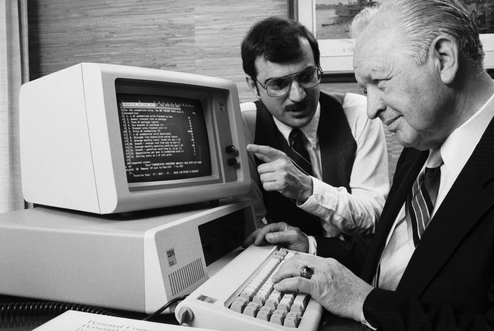

История профессии фронтенд-разработчика
История профессии frontend-разработчика начинается с рождения Всемирной паутины (World Wide Web) в 1989 году. Тогда Тим Бернерс-Ли впервые представил идею об интернете, основанном на гипертекстовой системе. В 1990 году был создан первый веб-браузер и первый веб-сервер.
В начале 1990-х годов, когда интернет только набирал популярность, веб-сайты были простыми и состояли из HTML-кода. Разработчики, которые создавали эти веб-сайты, были одновременно и дизайнерами, и программистами, и верстальщиками.
В середине 1990-х появились новые технологии, такие как JavaScript (1995) и CSS (1996), которые позволили веб-разработчикам создавать более интерактивные и стильные сайты. Это стало отправной точкой для разделения профессий на более узкоспециализированные роли, такие как frontend-разработчик и backend-разработчик.
Первые фронтенд-разработчики преимущественно занимались правкой и локальным тестированием файлов, их пересылкой через FTP на сервер. После того, как численность браузеров возросла, специалисты принялись осваивать IE6 и занялись внедрением эффективных методов, целенаправленных на получение пиксельного соответствия в разных веб-обозревателях.
Рождение frontend можно связать с появлением в 2002 году патента, в котором описывается концепция одностраничного веб-приложения (Single Page Application, SPA). Но фактически frontend стал набирать популярность только в начале 2010-х годов с появлением таких библиотек как Knockout и AngularJs.